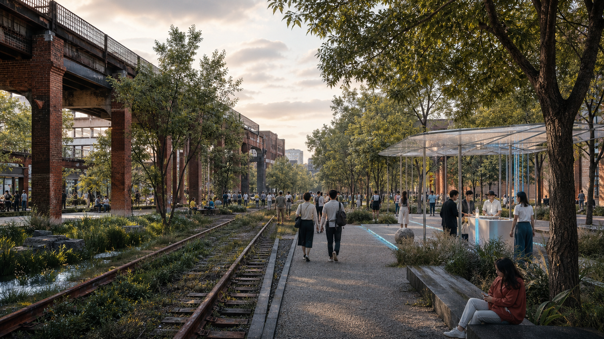
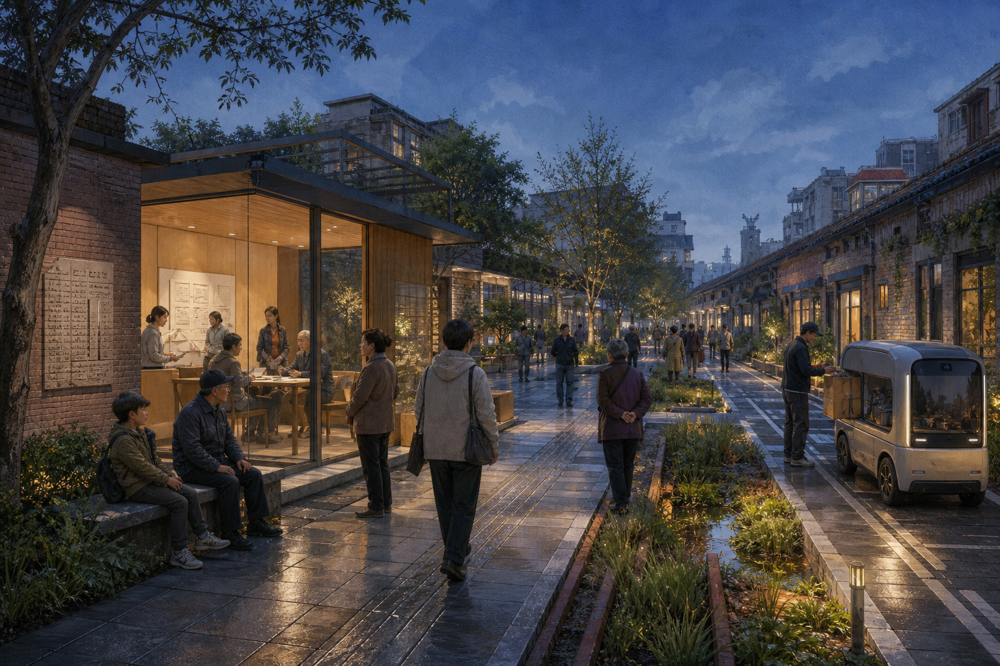

The Unfinished City
This is not an image of a future city that has already been completed. It is an urban-renewal method that keeps an existing city visible, discussable, testable and revisable.
The task package's provisional site and key-area geometries are used only as generation, display and self-check constraints. They are not exact redlines. All spatial moves remain conceptual until official data, ownership, heritage, road and engineering conditions are confirmed.

Land-use plan: co-intelligence on real ground
The structure diagram explains relationships; the plan explains embedding. Green marks parks and open space, blue marks learning and innovation mixed with everyday life, yellow marks residential and service fabric, rose marks public facilities and the learning ground, and violet marks the two transitions that reconnect the system.

Dynamic concept model: a city continuously revised
Click a phase to see the same renewal axis evolve from noticing problems to maintaining shared urban capacity. Click a key area to read its spatial role.
Formal drawings: one auditable spatial narrative
The dynamic page does not replace the formal drawings. It connects them into a readable path: overall structure, embedded land use, differentiated key areas, layered public ground, and phased change.


Experience images: atmosphere only
These images explain a public-space experience that is visible, explainable and ready for human takeover. They are not evidence of existing conditions, boundaries, engineering or statutory controls.


Deliverable relationship: this page is the offline dynamic visualization component at visual/index.en.html. It accompanies the Chinese report, formal PDFs, GeoJSON, metrics and matrices; it is not embedded into the PDF. It uses no CDN, remote map tiles, external fonts, APIs or tracking.
Sources and assumptions: published taskbook, cleared site package and structured submission data. Provisional site, key-area, road, building, ownership, planning-control and engineering conditions must be reviewed when official materials change.